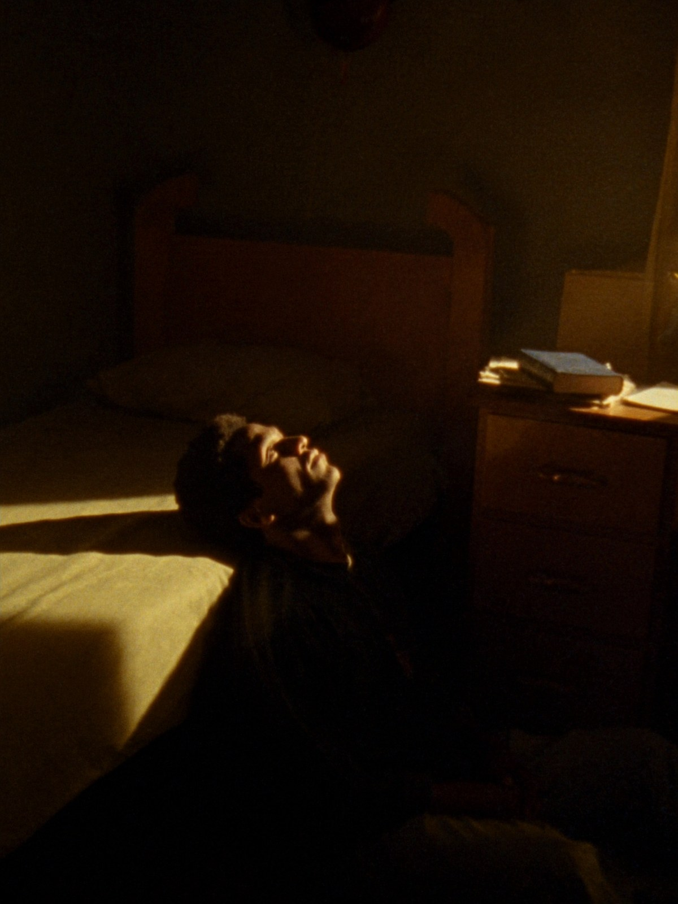
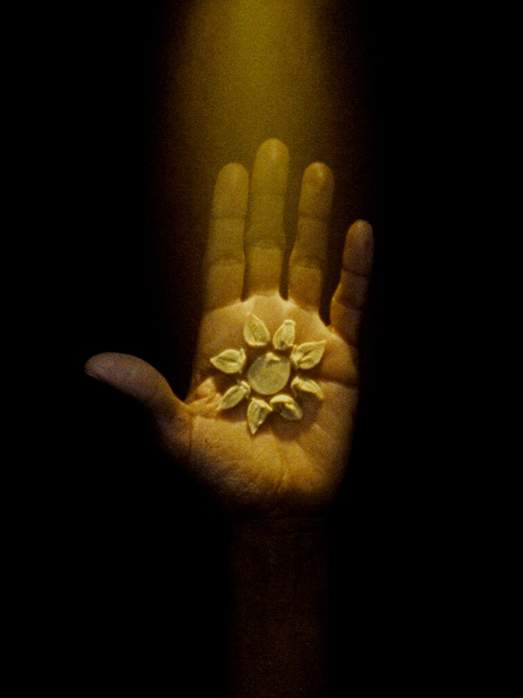
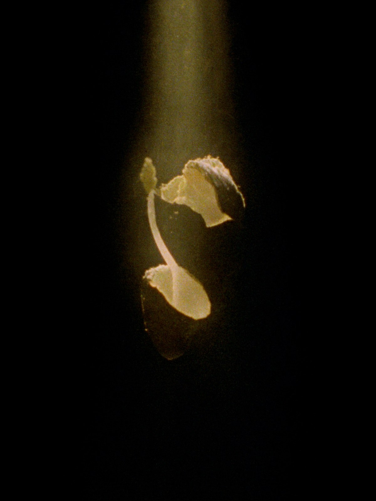
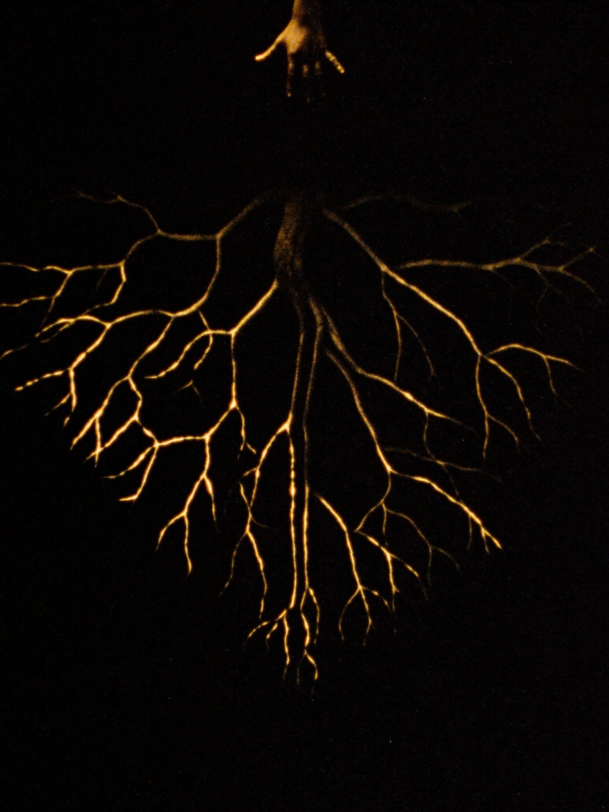
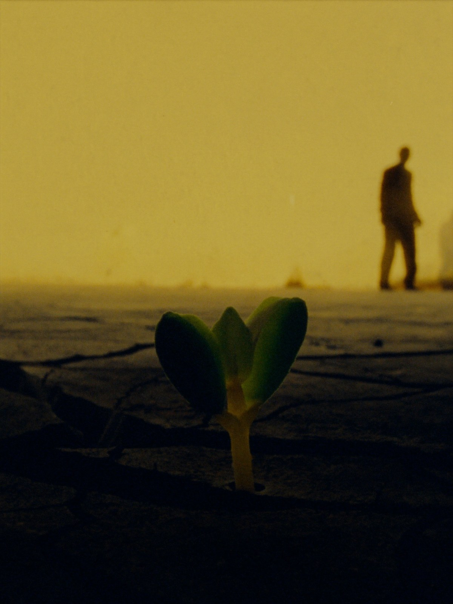
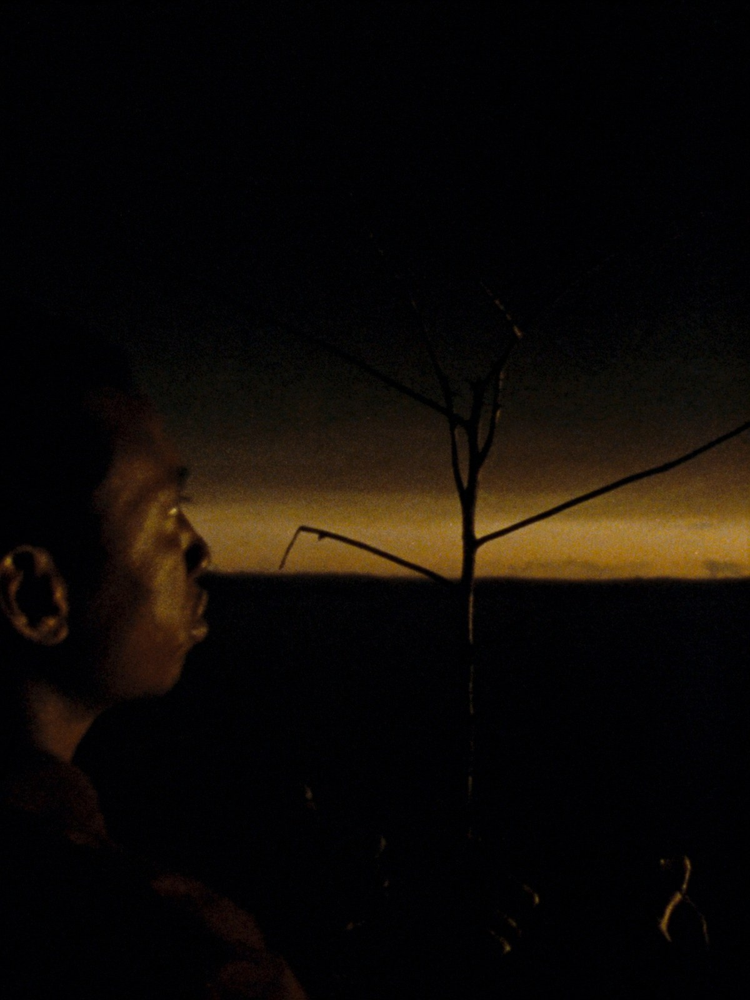
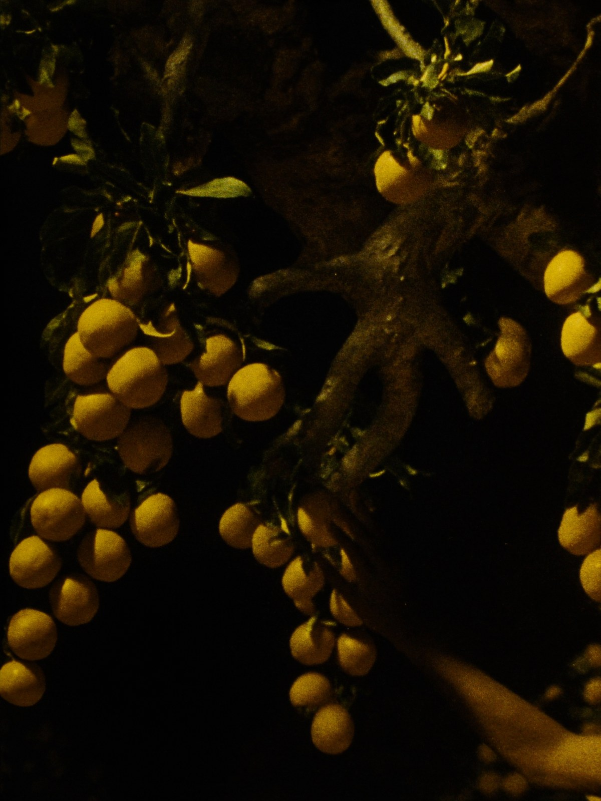
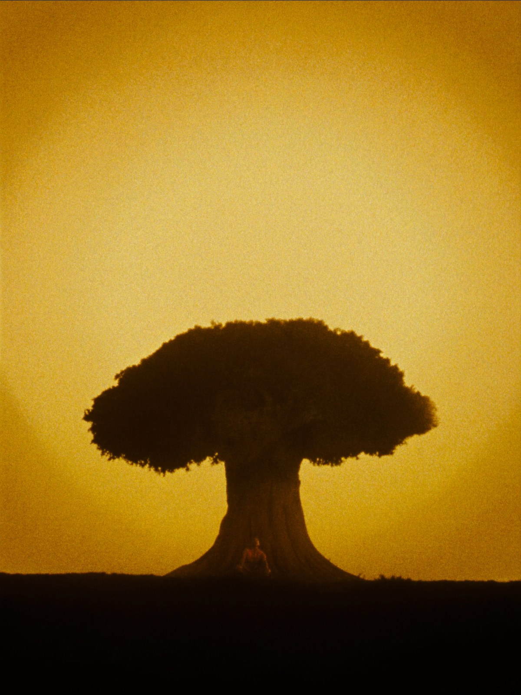
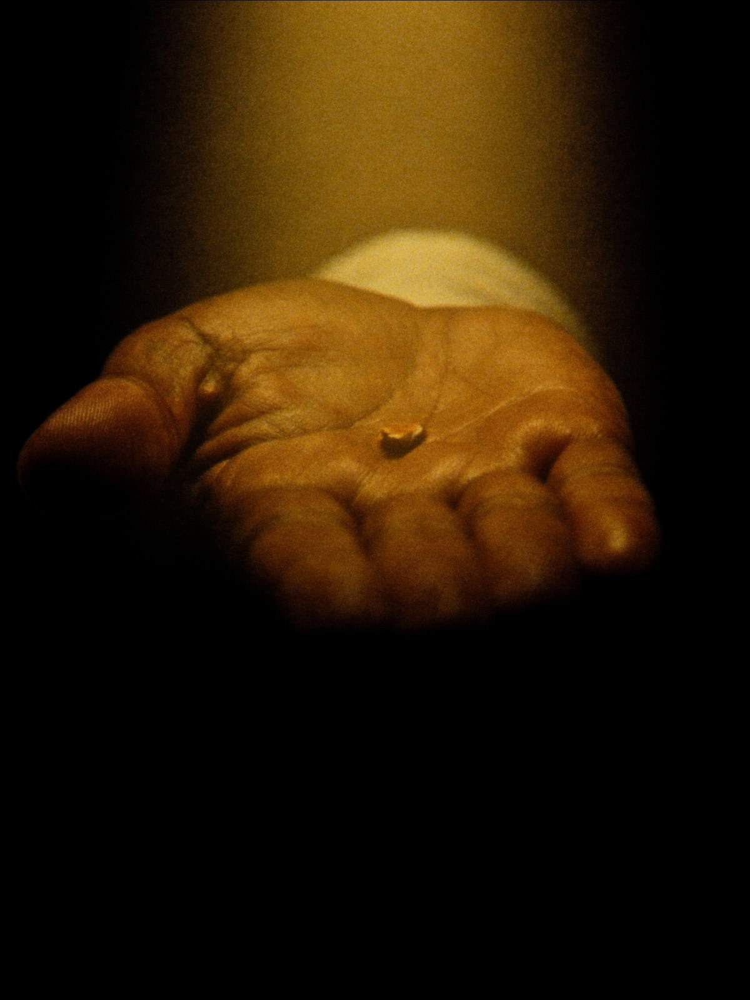

Le plan reçu en 2020 dans une chambre d'étudiant du Bourget.
7 phases. 7 ans.
Ce que tu vas lire n'est pas un programme.
Ce n'est pas une méthode pour réussir, ni une liste de hacks, ni une formule à appliquer.
C'est un témoignage.
L'histoire d'un plan que je n'avais pas choisi, sur sept années que je n'avais pas négociées. Une parabole vécue.
Je l'écris aujourd'hui parce qu'il est temps. Et parce que peut-être, quelque part dans ces lignes, tu reconnaîtras la phase que tu es en train de traverser.

Une chambre d'étudiant. Pas grande. Les murs nus, un bureau, un lit, une Bible posée sur la table.
Ce soir-là, je suis en prière.
Et au cœur de la prière — je vois. Une graine. Puis un arbre qui en sort. Et j'entends, très clairement, un seul mot : « germination ».
Pas une voix audible. Pas un coup de tonnerre. Mais une certitude posée. Un plan sur sept ans, avec une forme très précise : celle d'un arbre qui pousse. Une graine, une éclosion, un enracinement. Sept phases. Sept années.
Je n'ai pas tout compris ce soir-là. Mais j'ai su que je venais d'être planté.

Chaque entreprise aussi.
Et toute graine, qu'elle soit semée dans un cœur, un projet ou une mission, suit la même loi. Sept phases. Toujours dans le même ordre. Aucune ne peut être sautée. Aucune ne peut être accélérée par la volonté seule.
Tu peux refuser ce qui pousse en toi. Mais tu ne peux pas inverser le processus.
Sur cette terre.
J'arrive en France. Sur ce territoire qui n'était pas le mien à la naissance, mais qui devient le sol où je vais pousser.
Au début, tout va bien. Trop bien, même. Pas de tension, pas d'épreuve, pas d'avertissement. J'ai des études, des projets, un environnement qui m'entoure. La graine vient de tomber dans la terre — et personne, à ce stade, ne devine ce qu'elle va devenir.
Une graine, c'est un instant. Le reste, c'est le travail invisible.

Le craquement.
Une graine ne s'ouvre pas en douceur. Elle craque. Elle se brise. Elle perd sa coque.
Cette année-là, tout commence à s'effondrer en même temps. Une rupture amoureuse, brutale. Au travail, je découvre qu'on me méprise — une incompétence caractérisée, m'a-t-on fait comprendre. Un contrat manga à 9 000 € que je rate de peu, alors que tout le projet aurait dû y trouver son souffle. Spirituellement, je perds mes repères.
Et dans le noir — il faut que je le dise — j'ai pensé au suicide. Plusieurs fois. Je n'osais même pas le nommer.
Je n'ai pas compris à l'époque que c'était l'éclosion. Que c'était la phase prévue. Une graine éclot toujours par brisement.

Dans le silence.
Après le brisement, je descends. Je me connecte à la Parole. Je lis, j'écoute, je relis.
Myles Munroe. Les Brown. Jim Rohn. John Maxwell. Yvan Castanou. Yves Castanou. Juliana Ondo. Chaque enseignement devient une racine. Je travaille mon mindset, mon caractère — l'orgueil que je cachais derrière de la timidité, le besoin d'attention déguisé en générosité, l'insoumission aux autorités spirituelles que j'avais mises au-dessus de moi.
Je crée mon premier projet d'envergure : une œuvre théâtrale multimédia pour Jeunes Prodiges Édition 1. Le spectacle est un succès.
Un ami me prend à part. « Tu dois publier ce que tu fais. En parler. Le montrer. » Il me presse, avec sincérité, de prendre la lumière. De saisir l'élan. De ne pas laisser passer le moment.
Mais quelque chose en moi savait : ce n'était pas le moment. C'était le temps de rester caché. Les racines n'étaient pas assez profondes pour soutenir le poids que la lumière allait apporter.

L'Engagement.
Le film L'Engagement. C'est lui qui me sort de l'ombre.
Pour la première fois, on me regarde sérieusement. Des pairs commencent à parler de mon travail. Des portes s'ouvrent que je n'avais pas frappées. La première lumière. Je sens qu'elle m'est rendue, enfin — mais je sais aussi que je suis encore tendre.
C'est la phase la plus fragile. Celle où beaucoup s'effondrent — pas par manque de capacité, mais par excès trop tôt. La lumière qui te révèle peut aussi te brûler.

« Élargis l'espace de ta tente. »
— ÉSAÏE 54:2
Cette phase commence par une parole reçue dans la prière. Six mots qui changent l'année : « Élargis l'espace de ta tente. »
Je sens que je dois sortir du terrain unique. Diversifier. Tendre les branches là où il y a de l'espace à prendre.
Bande dessinée. Films. Je deviens responsable d'un département d'Église — EJP FILMS. Je commence à porter d'autres que moi. Mon terrain s'élargit, et avec lui, le poids que je dois soutenir.
Je ne suis plus une pousse. Je deviens un jeune arbre.

Le coût du fruit.
« En vérité, en vérité, je vous le dis : si le grain de blé qui est tombé en terre ne meurt, il reste seul ; mais, s'il meurt, il porte beaucoup de fruit. »
— JEAN 12:24
Le fruit arrive. Mais il a un coût.
Mes disciples se multiplient. Mes responsabilités aussi. Je me marie — une bénédiction qui devient une discipline. Les premiers vrais clients arrivent — pas des amis qui me soutiennent, mais des marques qui me paient pour la valeur que je leur apporte.
Et puis, dans la même saison — je perds mon emploi.
À l'instant où je commence à porter mes propres fruits, le système qui me retenait me lâche. Ce n'est pas un accident. C'est une loi : tu ne peux pas porter tes fruits tant que tu te nourris de ceux d'un autre.

L'arbre devient repère.
C'est la phase que je suis en train de vivre, à l'instant où j'écris ces mots.
Je ne pensais pas que sept ans après ce soir au Bourget, je verrais ce que je vois. Mais les fruits du couronnement ne sont pas des récompenses — ce sont des preuves. La preuve que la graine a tenu sa promesse.
L'arbre est devenu repère. On vient s'asseoir à son ombre. La graine a tenu sa promesse.
« C'est la plus petite de toutes les semences ; mais, quand elle a poussé, elle est plus grande que les légumes et devient un arbre, de sorte que les oiseaux du ciel viennent habiter dans ses branches. »
— MATTHIEU 13:32

Maintenant que tu connais les sept phases — pose-toi la question, honnêtement.
Quelle phase es-tu en train de traverser ?
Si tu es dans le brisement, tu n'es pas en train de mourir. Tu es en train d'éclore. Le silence où tu es n'est pas un abandon. C'est l'enracinement.
Si tu sens que tu es encore sous terre — tu n'es pas en retard.
Tu es à l'heure.